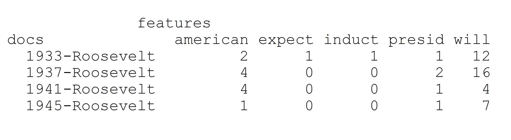
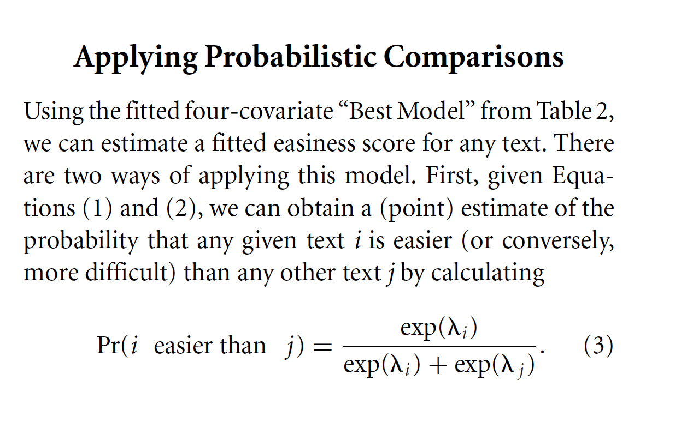

PPOL 6801 - Text as Data - Computational Linguistics
Week 3: Descriptive Inference - Comparing Documents
Housekeeping
Thanks for selecting the articles for replication exercise! Next steps:
Get access to the data and code ASAP
- Harvard Dataverse, see footnotes in the papers, contact the authors
- any issue, please, talk to me!
If the data is too big for your laptop, use a sample of the data.
If the paper has much more than the text analysis, ignore it, just focus on the TAD component.
Any questions?
Where are we?
Three primary challenges dealing with text as data:
Challenge I: Text is high dimensional
Challenge II: Text is unstructured data source
Challenge III: Outcomes live in the latent space
Last week:
Pre-processing text + bag of words ~> reduces greatly text complexity (dimensions)
Text representation using vectors of numbers ~> document feature matrix (text to numbers)
Plans for today
We will start thinking about latent outcomes. Our first approach will focus on descriptive inference about documents:
Comparing documents
Using similarity to measure text-reuse
Evaluating complexity in text
Weighting (TF-iDF)
Recall: Vector space model
To represent documents as numbers, we will use the vector space model representation:
A document \(D_i\) is represented as a collection of features \(W\) (words, tokens, n-grams, etc…)
Each feature \(w_i\) can be placed in a real line
A document \(D_i\) is a point in a \(\mathbb{R}^W\)
- Each document is now a vector,
- Each entry represents the frequency of a particular token or feature.
- Stacking those vectors on top of each other gives the document feature matrix (DFM).
Document-Feature Matrix: fundamental unit of TAD
Source: Arthur Spirling TAD Class
In a two dimensional space
Warning: package 'ggplot' is not available for this version of R
A version of this package for your version of R might be available elsewhere,
see the ideas at
https://cran.r-project.org/doc/manuals/r-patched/R-admin.html#Installing-packagesWarning: 'BiocManager' not available. Could not check Bioconductor.
Please use `install.packages('BiocManager')` and then retry.Warning in p_install(package, character.only = TRUE, ...):Warning in library(package, lib.loc = lib.loc, character.only = TRUE,
logical.return = TRUE, : there is no package called 'ggplot'Warning in pacman::p_load(ggplot, tidyverse): Failed to install/load:
ggplotWarning: Using `size` aesthetic for lines was deprecated in ggplot2 3.4.0.
ℹ Please use `linewidth` instead.
Comparing Documents
How `far’ is document a from document b?
Using the vector space, we can use notions of geometry to build well-defined comparison/similarity measures between the documents.
- in multiple dimensions!!

Euclidean Distance
The ordinary, straight line distance between two points in space. Using document vectors \(y_a\) and \(y_b\) with \(j\) dimensions
Can be performed for any number of features J ~ has nice mathematical properties
no negative distances: sij 0 2 distance between documents is zero () documents are identical 3 distance between documents is symmetric: sij = sji 4 measures satisfy triangle inequality. sik sij + sjk
Euclidean Distance, w=2
\(y_a\) = [0, 2.51, 3.6, 0] and \(y_b\) = [0, 2.3, 3.1, 9.2]
\(\sum_{j=1}^j (y_a - y_b)^2\) = \((0-0)^2 + (2.51-2.3)^2 + (3.6-3.1)^2 + (9-0)^2\) = \(84.9341\)
\(\sqrt{\sum_{j=1}^j (y_a - y_b)^2}\) = 9.21
Exercise

- Which documents will the euclidean distance place closer together?
- Does it look like a good measure for similarity?
- Doc C = Doc A * 3
Cosine Similarity
Euclidean distance rewards magnitude, rather than direction
\[ \text{cosine similarity}(\mathbf{y_a}, \mathbf{y_b}) = \frac{\mathbf{y_a} \cdot \mathbf{y_b}}{\|\mathbf{y_a}\| \|\mathbf{y_b}\|} \]
Unpacking the formula:
\(\mathbf{y_a} \cdot \mathbf{y_b}\) ~ dot product between vectors
- projecting common magnitudes
- measure of similarity (see textbook)
- \(\sum_j{y_{aj}*y_{bj}}\)
\(||\mathbf{y_a}||\) ~ vector magnitude, length ~ \(\sqrt{\sum{y_{aj}^2}}\)
normalizes similarity by documents’ length ~ independent of document length be because it deals only with the angle of the vectors
cosine similarity captures some notion of relative direction (e.g. style or topics in the document)
Cosine Similarity
Cosine function has a range between -1 and 1.
- Consider: cos (0) = 1, cos (90) = 0, cos (180) = -1
Warning: package 'ggplot' is not available for this version of R
A version of this package for your version of R might be available elsewhere,
see the ideas at
https://cran.r-project.org/doc/manuals/r-patched/R-admin.html#Installing-packagesWarning: 'BiocManager' not available. Could not check Bioconductor.
Please use `install.packages('BiocManager')` and then retry.Warning in p_install(package, character.only = TRUE, ...):Warning in library(package, lib.loc = lib.loc, character.only = TRUE,
logical.return = TRUE, : there is no package called 'ggplot'Warning in pacman::p_load(ggplot, tidyverse): Failed to install/load:
ggplotWarning in acos(dot_product/magnitudes): NaNs produced
Exercise
The cosine function can range from [-1, 1]. When thinking about document vectors, cosine similarity is actually constrained to vary only from 0 - 1.
- Why does cosine similarity for document vectors can never be lower than zero? Think about the vector representation and the document feature matrix.
More metrics
There are a large number of distance/similarity metrics out there, just to name a few:
Jaccard Similarity: overlap between documents
Manhattan Distance: absolute distance between documents
Canberra Distance: Weighted version of Manhattan Distance
Minowski: generalized version of Euclidean
No single best measure, depends on your research question.
Mozer et al, 2020 ‘Matching with Text Data’
But some recent research show Document Feature Matrix (DTM) + Cosine similarity works well to perceived similarity on documents

Application: Text-Reuse
Linder et. al, 2020 - Text as Policy
How is cosine similarity used in the application?
Main assumption: text reuse serves as a summary measure of the greatest overlap observed across all relevant policy dimensions represented in legislative text.
How? Identifying large segments of equivalent or highly similar text.
Smith-Waterman local alignment algorithm
- longest sequence of overlap allowing for gaps and mismatches
The SW algorithm amounts to a systematic procedure for scoring similar sequences of text, and efficiently finding the highest scoring sequences in two documents.
Analysis:
- Selection: Elastic search for 500 candidates
- Smith Waterman alignment algorithm
- Downeight give average cosine dissimilarity between allignment and a random sample of 1000 other alignments. If the alignment is everywhere, downweight.
Text Complexity
Lexical Diversity
Length refers to the size in terms of: characters, words, lines, sentences, paragraphs, pages, sections, chapters, etc.
Tokens are generally words ~ useful semantic unit for processing
Types are unique tokens.
Typically \(N_{tokens}\) >>>> \(N_{types}\)
Type-to-Token ratio
\[ TTR: \frac{\text{total type}}{\text{total tokens}} \]
So… authors with limited vocabularies will have a low lexical diversity
Issues with TTR and Extensions
- TTR is very sensitive to overall document length,
- shorter texts may exhibit fewer word repetitions
- Length also correlates with topic variation ~ more types being added to the document
Other Measures
Guiraud: \(\frac{\text{total type}}{\sqrt{\text{total tokens}}}\)
S Summer’s Index: \(\frac{\text{log(total type)}}{\text{log(total tokens)}}}\)
MTTR: the Moving-Average Type-Token Ratio (Covington and McFall, 2010)
Readability
Another way to think about textual complexity is to consider readability.
Readability: ease with which reader (especially of given education) can comprehend a text
Combines both difficulty (text) and sophistication (reader)
Use a combination of syllables and sentence length to indicate difficulty
Human inputs to built parameters
Flesch-Kincaid readability index
- Measurement problems from education research
- average grade of students who could correctly answer at least 75% of some multiple-choice questions
Flesch-Kincaid readability index
Interpretation: 0-30: university level; 60-70: understandable by 13-15 year olds; and 90-100 easily understood by an 11-year old student.
Spirling, 2016. The effects of the Second Reform Act

Benoit et al., 2019, Political Sophistication
Approach
Get human judgments of relative textual easiness for specifically political texts.
Use a logit model to estimate latent “easiness” as equivalent to the “ability” parameter in the Bradley-Terry framework.
Use these as training data for a tree-based model. Pick most important parameters
Re-estimate the models using these covariates (Logit + covariates)
Using these parameters, one can “predict” the easiness parameter for a given new text
- Nice plus ~ add uncertainty to model-based estimates via bootstrapping
Benoit et al., 2019, Political Sophistication

Weighting Counts
Can we do better than just using frequencies?
So far our inputs for the vector representation of documents have relied simply the word frequencies.
Can we do better?
One option: weighting
Weights:
- Reward words more unique;
- Punish words that appear in most documents
Federalist Papers

Source: Grimmer, Roberts, and Stewart, Text as Data, 2022